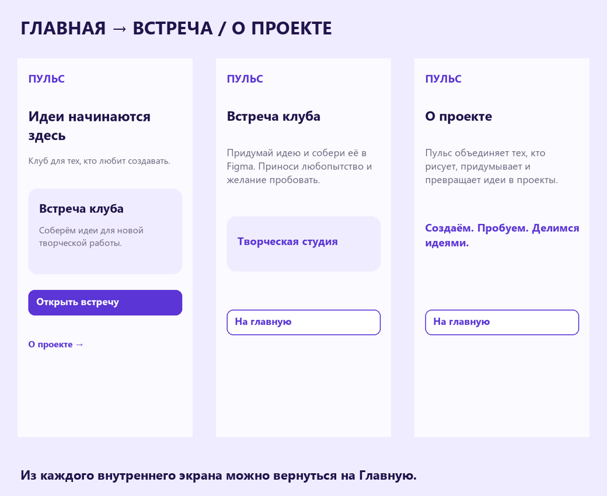
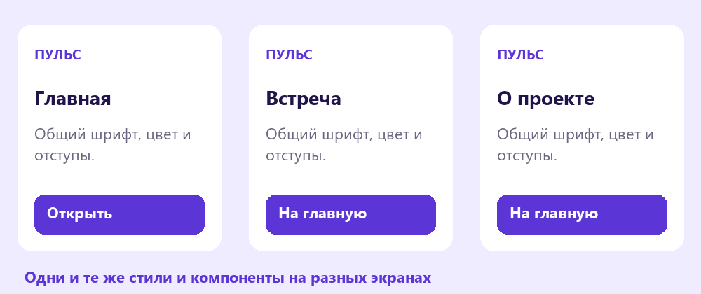
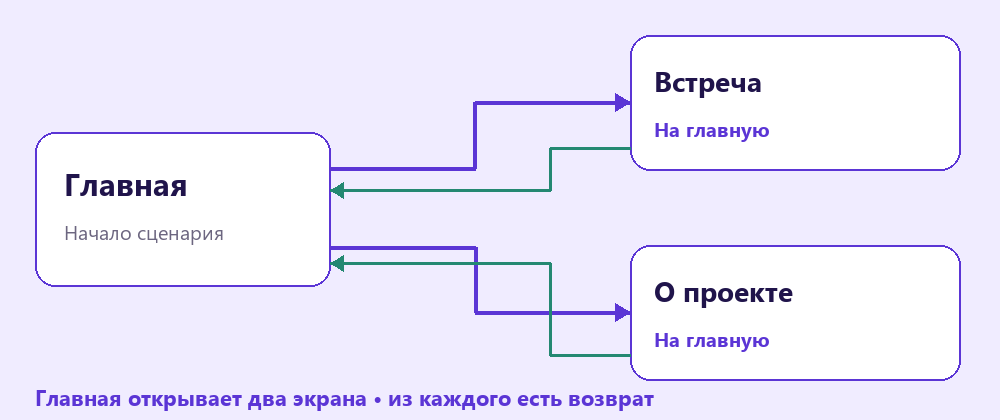

Итоговый проект
Собери собственный мини-проект из трёх экранов, проверь оформление и покажи работающий маршрут пользователя.
Перейти к заданию ↗
Перед новой практикой
Три небольших вопроса по предыдущему уроку. Выбери ответ и нажми «Проверить».
Клавиши для практики
Сочетания для Windows. Переключи клавиатуру на английскую раскладку. Перед командой заверши ввод текста.
Выбери задачу проекта
Можно продолжить клуб или выбрать новую тему: библиотека, творческая студия, научный кружок. Сформулируй одно действие пользователя: найти встречу и прочитать её описание. Для него хватит трёх экранов: Главная, Встреча и О проекте. В шаблоне есть готовые исходные тексты и элементы.

У проекта одна понятная задача и короткий маршрут из трёх экранов.
Попробуй в Figma
Собери из знакомого
Используй цветовые и текстовые стили, Auto layout у карточек и компоненты кнопок. Поддерживай одинаковые отступы и повторяемые детали на разных экранах. Здесь не нужен новый инструмент: важно собрать изученное в одну аккуратную работу.

Цвета, шрифты и кнопки повторяются на всех трёх экранах.
Попробуй в Figma
Пульс
Клуб творческих идей
Встреча клуба
Придумай идею и собери её в Figma.
О проекте
Рисуем, придумываем и превращаем идеи в проекты.
Пройди оба маршрута и вернись на Главную.
Проверка глазами пользователя
Открой Present и пройди маршрут без помощи автора. Проверь понятность подписей, возвращение на Главную и совпадение содержания экрана с обещанием кнопки. Затем посмотри на каждую страницу целиком: текст должен помещаться, а изображения и фигуры оставаться аккуратными.

Прототип проверяем по действиям пользователя, оформление - на каждом экране.
Попробуй в Figma
Собственный мини-проект
Создай свой мини-проект из трёх экранов 390 × 844 px. Выбери тему и содержание самостоятельно. Образец показывает уровень аккуратности; копировать его оформление полностью не требуется.
Кнопка создаёт копию шаблона. Для этого нужно войти в свой аккаунт Figma. Работай в собственной копии. Инструкции и образцы заблокированы.
Проверь свою работу
Отмечай пункты после проверки в Figma.
Если закончил раньше
Подготовь ещё одну версию Главной с другим расположением блоков. Сохрани исходную и объясни, какая лучше помогает выполнить задачу.
Сохрани работу
Выдели итоговый фрейм или контейнер в Layers. В правой панели открой Export (экспорт), выбери PNG и нажми Export. Сохрани на флешку, назови файл своим именем. Для трёх экранов выдели каждый фрейм и сохрани его отдельно. Добавь к имени файла название экрана.